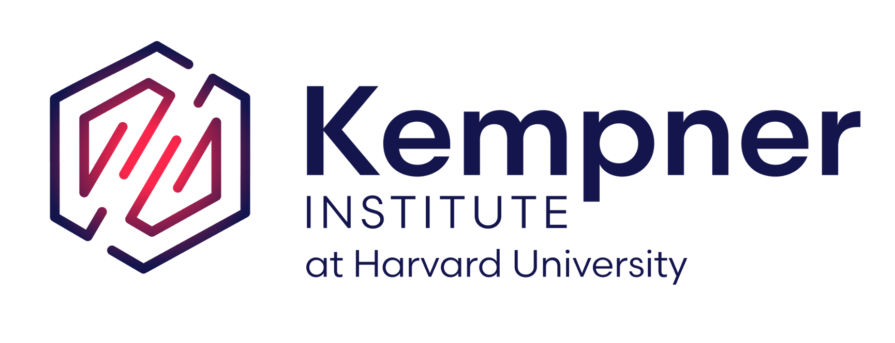
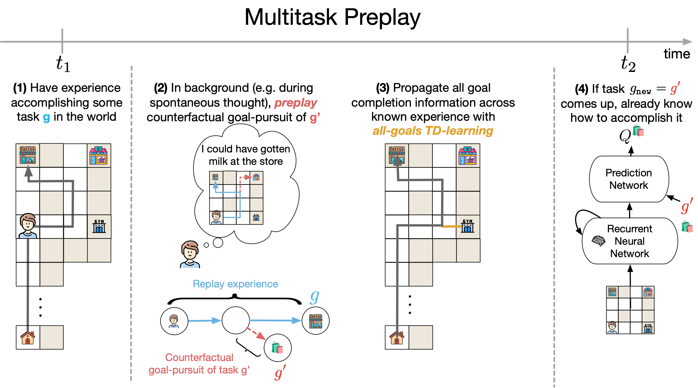
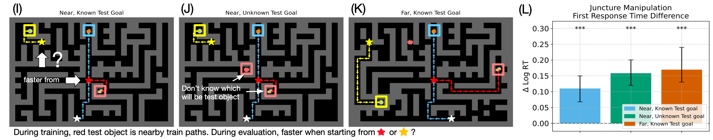
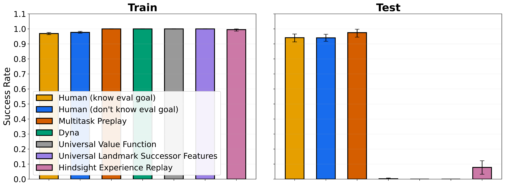
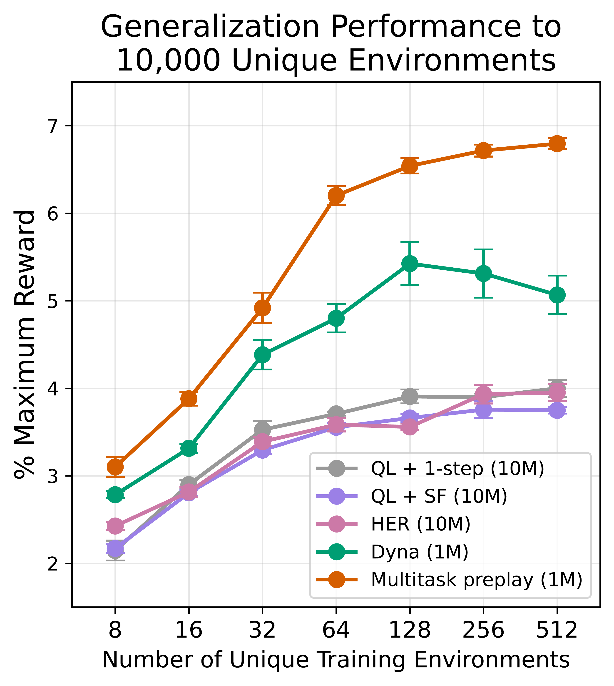

Preemptive Solving of Future Problems: Multitask Preplay in Humans and Machines
During offline replay, humans and AI agents simulate goals they did not pursue — caching solutions into a shared predictive representation that explains a counterintuitive human bias and improves RL generalization to thousands of unseen worlds.

1Kempner Institute · Harvard 2Psychology & CBS · Harvard
2Psychology & CBS · Harvard
 3CSE · Michigan
4LG AI Research
3CSE · Michigan
4LG AI Research
The same person solves a new task faster when they start from a familiar juncture than from an equally-distant unfamiliar one — as if the route had been pre-rehearsed. We argue this happens because, while pursuing one task, you encounter accessible goals you don't pursue; during offline replay, you preplay those unpursued goals and cache predictions for them; at test time, behavior on a familiar juncture is fast and reactive. The same algorithm explains 5 pre-registered behavioral predictions in people — including partial path reuse even when the new shortcut is shorter — and scales an RL agent to 10,000 unseen Craftax worlds.
- Algorithm. Multitask Preplay: replay one task; preplay the goals you observed but didn't pursue; cache the resulting trajectories into a shared predictive representation.
- Behavioral evidence. Across grid-world and Craftax experiments (n≈100/each, 5 pre-registered predictions), people behave as if they have preemptively rehearsed goals before they encounter them — faster RTs at familiar junctures pointing toward an unannounced goal, partial path reuse even when the new shortcut is shorter.
- AI scaling. Beats Dyna, Universal Value Functions, Universal Successor Features, and Hindsight Experience Replay on transfer to 10,000 held-out Craftax environments.
- Bridging. One computational idea — offline counterfactual simulation — connects human behavioral biases to RL generalization. AI and cognitive science can keep informing each other on this template.
One mechanism. Two puzzles.
Do RL agents really need to replan from scratch for every new goal? Why do rodents "preplay" goals they haven't pursued?
While searching for coffee in a new neighborhood, you may come across gyms, grocery stores, and parks — enabling you to quickly find these locations later when you need them. You weren't told to look for the grocery store. But when the goal becomes "go to the grocery store," your behavior is fast and reactive, as if you'd planned the route already.
We hypothesize this happens because, during offline replay, you image pursuing goals you encountered along the way but didn't actually pursue. Those counterfactual trajectories cache into a single value function that covers many goals. We call it Multitask Preplay — a nod to hippocampal preplay, where place cells fire for places the animal hasn't been yet. The underlying RL idea goes back to Kaelbling in the 90s: use one experience to learn about many goals. We wanted to see what it looks like at scale.
Multitask Preplay generalizes Dyna, which only caches the goal you pursued. It sits between Dyna (model-based, single-task) and successor features (predictive representations across goals), combining what each does well.

![Two-axis categorization of RL methods. Top: a 2x3 grid mapping number-of-predictions-per-state (single reward vs. multiple) against compute strategy (model-free, model-based background learning, decision-time planning). Multitask Preplay (Ours) sits in the multi-prediction model-based-background cell. Bottom: gridworld behavior for Q-learning, Successor Features / HER, Dyna, and Multitask Preplay, showing what each caches when the agent has experienced the path to a coffee shop while observing food and grocery store along the way.](./static/images/algo-comparison.png)
People behave as if they've rehearsed goals before they encounter them.
We tested this in a setting where train and test conditions involved distinct tasks. Despite only ever being trained on the train tasks, people behave as if they've rehearsed goals they weren't told about. Spawn the same person at a familiar juncture, point them at a novel goal — they're faster than from an unfamiliar start the same distance away. Only Multitask Preplay predicts this.
Across grid-world (JaxMaze) and 2D Minecraft (Craftax) studies, we test 5 pre-registered predictions. The headline finding: the same person is faster at the same novel task when starting from a familiar location than from an unfamiliar one — even when both starts are equally far from the goal. Multitask Preplay explains why: when a person passed by that location during training, they preplayed the route from there to nearby goals, and so the route is already cached when the test arrives. This inverts what model-free, decision-time, or hindsight-based methods predict.

The juncture-spawn advantage is one signature; partial path reuse is another. Give a person a new goal near an old route, and they don't take the optimal shortcut — they partially reuse the trained path. We observe this even when the reused path is longer than the available shortcut: in our path-reuse experiment, the reused-path length is 61 steps versus a shortcut of 55, and subjects still partially reuse the trained path 62.8% of the time, with lower step-by-step response times on the reused segment. To test whether this is a generic "habit" effect or something specific to multi-goal preplay, we benchmarked humans against a panel of RL methods in Craftax. Humans and Multitask Preplay cluster at high success and high path reuse; Dyna, UVF, USFA, and HER all fall away.
![Three panels (A, B, C). A: a procedurally generated 2D Minecraft (Craftax) overworld with the agent spawn, training stones marked by stars, and an evaluation stone visible nearby. B: the agent's partial view (foreground panel) and inventory bar. C: scatter plot of path-reuse rate (X) vs. success rate (Y); humans (blue: known eval goal; orange: unknown eval goal) cluster at high success and high path-reuse, with Multitask Preplay alongside; Dyna, Universal Value Function, Universal Landmark Successor Features, and Hindsight Experience Replay all sit far below — they generalize but don't reuse paths.](./static/images/figure-3a-model-comparison.png)
Only humans and Multitask Preplay clear the cliff.
The ablation we found most telling: in Craftax, every baseline — Dyna, Universal Value Functions, Successor Features, Hindsight Experience Replay — trains to near-perfect success. At test, only humans and Multitask Preplay transfer. Every other method collapses.

One agent, 10,000 new worlds.
This same algorithm scales further. When learning from a finite set of environments, Multitask Preplay better generalizes to 10,000 unseen Craftax worlds. Dyna and model-free methods plateau long before that.

Two signatures in different systems, one computational idea underneath.
The same trick that explains a behavioral bias in people also scales an RL agent to unseen worlds. We're hopeful this is a template for how AI and cognitive science can keep informing each other: a computational-level claim that constrains both the algorithm space (in RL) and the hypothesis space (in cognitive science).
What this work doesn't do.
You need a reasonably accurate world model to preplay with. Multitask Preplay assumes access to a model that can roll out counterfactual goals during offline replay. We use ground-truth simulators in this paper. Whether the result holds when the world model itself is learned online — and how preplay interacts with a noisy or biased model — is not established here.
Tested on 2D environments with discrete tasks. Our results span gridworlds and 2D Minecraft. Whether the same mechanism scales to high-dimensional continuous control or to compositionally complex task structures (Habitat-class transfer) is the natural next step, but it's not what we showed.
Behavioral evidence is consistent with preplay, not unique to it. Our behavioral predictions are derived from Multitask Preplay; the data is consistent with the algorithm. Other algorithms that share core properties (e.g., off-policy multi-goal value caching with TD-learning) may make similar predictions. The strongest part of the bridge claim is that Multitask Preplay alone matches both human path-reuse rates and the train/test cliff among the baselines we compared.
Where this goes.
Next we want to see what happens when the world model is learned online — for example, with MuZero — and to scale to domains like Habitat, where agents need to perform inter-related tasks in unseen homes.
Scaling there will lean on two corrections we developed along the way: off-task Q(λ) and conservative all-goals learning. They're what let us match the human data — and what we think will unlock Habitat-class transfer.
Methods (for the technically curious)
Off-task Q(λ). Propagates multi-step returns across goals the agent didn't pursue — a correction on Peng's Q(λ), applied on the goal axis instead of the policy axis. The trace is cut when the greedy actions for the off-task goal diverge from the actions actually taken, preventing erroneous backup of value from on-task rewards that don't apply to the off-task goal.
Conservative all-goals learning. Keeps value estimates from drifting when extrapolating to unseen goals. Penalizes Q-values for actions absent from the data, suppressing inflated estimates while still propagating value from the true off-task reward.
![A 3×3 grid comparing three losses (L_Qλ, L_OQλ, L_COQλ) across three trajectory cases. Top row: when greedy off-task actions match online actions, all three losses correctly back up value (green check). Middle row: when greedy off-task actions diverge from online actions, plain Q(λ) erroneously propagates on-task reward (red X) while off-task Q(λ) and the conservative variant cut the trace correctly. Bottom row: when greedy off-task actions are suboptimal for on-task data (overestimated Q-values), plain Q(λ) backs up the inflated value (red X), off-task Q(λ) backs up only from the inflated estimate (red X), and only the conservative variant suppresses the overestimate while still propagating from the true off-task reward (green check).](./static/images/value-backprop.png)
Both corrections are drop-in on a Dyna backbone. Full derivations + ablations in §Methods of the paper. Reference implementation in github.com/wcarvalho/multitask_preplay.
BibTeX
@article{carvalho2025preemptive,
author = {Carvalho, Wilka and Hall-McMaster, Sam and Lee, Honglak and Gershman, Samuel J.},
title = {Preemptive Solving of Future Problems: Multitask Preplay in Humans and Machines},
journal = {arXiv preprint arXiv:2507.05561},
year = {2025},
}